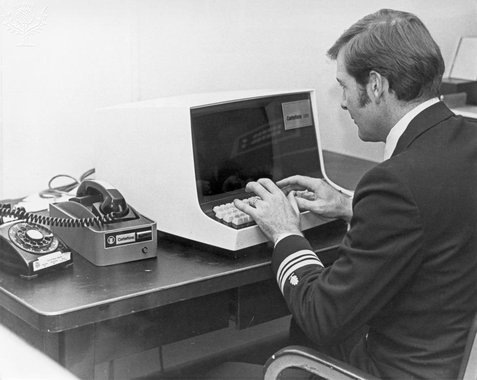

The Wave of Third Generation Computers
The term 'third generation computers' derives from the advancement in computers in 1964 and the materialisation of integrated circuits (IC) or also known as the silicon chip. This advancement saw computers improve in both speed and size by building the components into one crystal, which traditionally were built into separate crystals. This improvement in size and speed allowed this generation of computers to penetrate the wider consumer market with the introduction of the computer terminal; a monitor and keyboard that connected via telephone lines. It was also the same time Floppy disks were introduced for storage, the first introduction of portable data. (Thomas, 2021)
